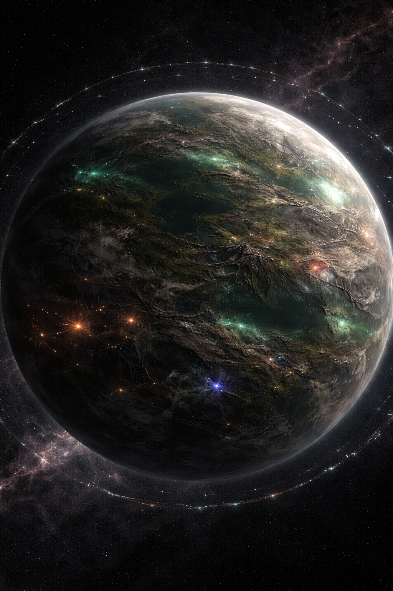
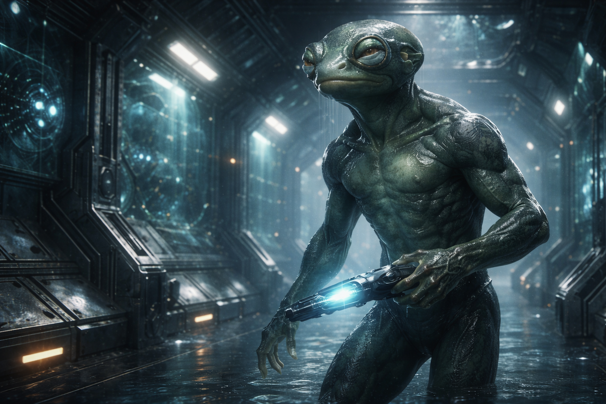

Description
Status: Collapsing Colony — a once-living wetland world now reduced to a jewel-rich mining planet, its drained surface slowly crumbling under the compounded weight of extraction and time’s own corruption.
Suns: Yellow
Moons: none
Zarnis — Planetary Definition
Zarnis was once a world of endless wetlands, where swamps stretched beyond the horizon and slow, braided rivers glowed at night with soft green bioluminescence. Amphibious civilizations thrived there, raising floating reed cities and elegant stone pylons from the water, their technology shaped not by fire and metal but by buoyancy, irrigation, and living architecture. Their culture moved with the rhythm of tides and seasons, valuing patience, balance, and continuity.
Then the Authority arrived—and Zarnis was not conquered, but reclassified. Labeled a Collapsing Colony, the world was deemed economically valuable and environmentally expendable. Beneath the wetlands lay immense crystalline veins, and soon the swamps were drained, redirected, and poisoned to expose gemstones of extraordinary purity: diamonds like frozen light, rubies burning with inner fire, sapphires dark as midnight seas. Floating cities settled and sank. Waterways hardened into excavation trenches. What had once been a breathing water world became a planetary quarry, stripped but deliberately kept alive.

The Zarnisians themselves were not erased; they were repurposed. Some remained to mine the jewels beneath skies that no longer mirrored water, while others were exported across Authority space under the language of “relocation”—maintenance crews, aqueduct engineers, and resource stewards sent to sustain worlds that would never belong to them. Zarnis endures now as a wounded planet: drained, harvested, and quiet, its lost tides remembered only in the slow green glow that still lingers in the deepest surviving marshes.
